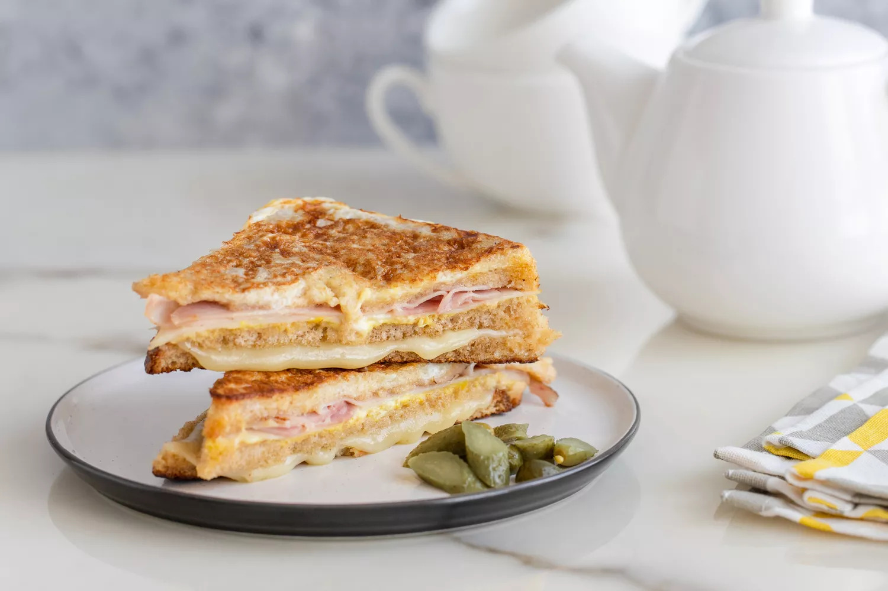

Classic Monte Cristo Sandwich by Diana Rattray

Prep Time: 15 minutes
Cook Time:10 Minutes
Serving:4 to 6
Ingredients
- 18 Slices bread
- Unsalted butter, to taste
- 6 slices ham
- 6 slices turkey, or chicken
- Mustard, to taste, optional
- Mayonnaise, to taste, optional
- 12 slices Swiss or Gruyère cheese
- 3 large eggs
- 1/3 cup milk
- 1/8 teaspoon salt
Steps
-
For each sandwich use 3 slices of bread. Butter one side of bread first.
- Then cover with a slice of ham and a slice of turkey or chicken.
-
Place the bread slice on top of turkey or ham slice and top with 2 thin
slices of cheese.
-
Butter the third slice for top; press sandwich lightly and trim crusts.
-
Cut each sandwich into halves diagonally and secure with toothpicks.
- In a medium bowl, beat eggs with milk and salt.
-
Heat a skillet or griddle over medium heat. Add butter to coat the pan.
-
Carefully dip the sandwich halves into the egg mixture. Brown the
sandwiches on all sides, adding more butter to the pan when necessary.
-
Remove toothpicks before serving and serve immediately while still hot
and crispy.